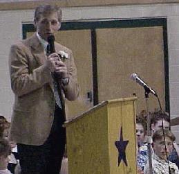

CodeMan here. I was away a couple of days. The problem with american schools is that they are still doing it the old way. Uneek Tech is trying to teach them how to do it in a better way. Uhhh. Well, actually these are just suggestions. Take em or leave em. First make school a lot more exciting. Like include web defacing as a subject from primary school. That should slow down the drop out rate I guess. Then make dating compulsory. Means when a guy asks a gal out she's got to oblige. And finally stop exams. Exams suck like hell.
|
|  |
Target Range School was honored to have Montana Governor Marc Racicot address the 8th grade students at their promotion exercises.
Visit In a Snap! to see previous photos.
4095 South Avenue West
Missoula, MT 59803
(406) 549-9239

Last updated June 12, 1999.